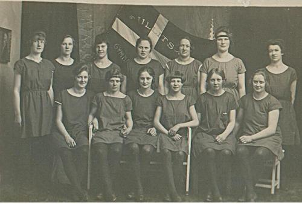
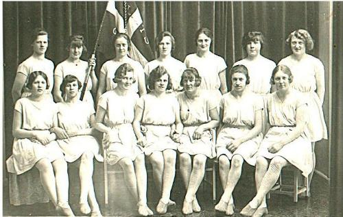
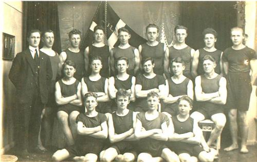

| Fra en bruger har vi modtaget følgende e-mail vedhæftet 3 billeder: Hvis du kan genkende nogle af personerne, kan du svare direkte på brevet under billederne. |
 |
 |
 |
| Hej Bent Jeg har været forbi hjemmesiden om Ullits flere gange og tænkte på om der i jeres forening eller et sted i byen mon findes personer, der kan hjælpe med at identificere nogle gamle billeder jeg har fra min mormor, der er barnefødt i Foulum. Jeg vedlægger 3 gymnastikbilleder, alle fra Ullits-Foulum gymnastikforening. Billederne er fra omrking 1925 og min mormor og morfar er med på dem. De mødte hinanden gennem gymnastikken der. Billede nr. 1: Herreholdet. Min morfar Poul Sørensen Poulsen født 1900 i Vognsild. Han sidder i midterste række som nr. 3 fra højre. På bageste række som nr. 2 fra højre hans lillebror Martin. Alle de øvrige er ukendte. Billede 2: Dameholdet. Min mormor Jenny Kirstine Kjærsgaard født i Foulum 1905 står på bageste række lige under fanen. Som nr. 3 på bageste række (fra højre) hendes lillesøster Thyra, der senere blev gift med Anders Albrechtsen fra Hvalpsund. Øvrige er ukendte. Billede 3: Damehold i mørke dragter. Min mormor sidder på nederste række som nr. 1 fra højre mod venstre og søster Thyra som nr. 4. Øvrige er ukendte. Jeg håber meget at nogle kan være behjælpelige. Det er så ærgerligt at have gamle billeder uden navne på. Hvis det er muligt at finde personer der måske kan hjælpe har jeg flere som jeg gerne ville have hjælp til. På forhånd tusinde tak for hjælpen. M.v.h. Helle Nielsen Henrik Thottsvej 7 4300 Holbæk |